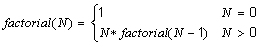
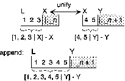

A Simple Program
The following is a mathematical definition of the factorial function:

Now the Prolog is similar:
factorial(0, 1).
factorial(N, M):- N1 is N - 1, factorial (N1, M1), M is N*M1.
This code abounds with special things to remember. The commas outside of parentheses mean and. The ':-' means if. The keyword 'is' is assignment, but "N is N-1" has no meaning in Prolog-there is no destructive assignment. There are no functions in Prolog, only relations. When we write 'factorial(N, M)' we are saying "N is related to M by the relation 'factorial'." The order is not important provided it is used consistently. The assertions about the relation 'factorial' end with a period. Variable names begin with upper-case letters, constants are numbers or names beginning with a lower-case letter.
We can now read the Prolog code:
factorial(0, 1). /* It is a fact that the factorial of 0 is 1*/
factorial(N, M) :- N1 is N - 1, /* If temporary variable N1 is assigned to N-1*/
factorial(N1, M1), /* and if the factorial of N1 is M1*/
M is NM1. /* and if M is assigned to N*M1*/
/* then the factorial of N is M*/
This is a recursive specification of the relation between a number N and its factorial M. Prolog reviews the rules about a particular relation in order, from top to bottom. The input
? - factorial(2, X).
is resolved as follows (see the figures):
? - factorial(0, X2).
The best implementation we have to offer at present is on bingsuns. When using your bingsuns account, type "swipl" to enter the version of Prolog on that machine. You can edit your Prolog programs using vi or emacs and then enter swipl.
Once in swipl, suppose your file is called "assig1.log," then you load it at the Prolog prompt by typing:
? - ['assig1.log'].
Note that the period '.' is essential. Swipl compiles Prolog into Warren Abstract Machine (WAM) instructions and interprets that code. It is relatively efficient. A user manual is available in the Library Reading Room; the Computer Center finds it is too long to be left on-line. You can enter the vi editor from within swipl but since you can switch swipl between background and foreground, it is simple to edit the files outside swipl and reload them after each change. The vi editor can be accessed from within swipl (if your default editor is emacs, this may not work):
? - edit('assig1.log').
An alternative implementation is Prolog2 which is available in H1 and can be copied from the Prolog2 directory is a public domain interpreter for 80x86 machines. Prolog2 has a built-in editor which has commands like the Turbo Pascal editor. The editor can be accessed from inside Prolog2 as follows:
? - edit(assig1).
The editor will create a file called "assig1.pro" in the directory containing Prolog2. You can also load files as indicated above for swipl. If you wish to edit a file in another directory, use quotes, for example:
? - edit('a:\pro\assig1.pro').
This editor is exited using CTRL-K, D, which returns you to Prolog. Function keys F3 and F4 moves through previous commands, which saves retyping.
A simple trace facility is very useful for debugging. Suppose you have defined a relation 'r1' which does not seem to be working. You can follow the execution of a query ? - r1(...) by typing
? - spy(r1).
? - r1(...).
To turn off the 'spy' facility, you can try
? - nospy(r1).
However, it may be safer to exit Prolog and restart it, since 'nospy' may not properly reset the environment and so may give strange effects (at least, this seems to happen in Prolog2).
You can see a listing of relation 'r1' as Prolog has stored it by typing:
? - listing(r1).
To exit Prolog type:
? - halt.
Lists
Prolog has a list construct denoted [...]. Elements are separated by commas. [0, 2, 4, 9] is a list. The notation [a | L] adds the element a at the beginning of the list L, e.g. [3 | [1, 2, 5]] = [3, 1, 2, 5]. There does exist a rarely used alternative notation: .(a, L). If we write [X | Y], it is understood that the X is the first element of the list [X | Y] and Y consists of all the other elements, e.g. if [X | Y] is [3, 1, 2, 5], then X = 3 and Y = [1, 2, 5]. The notation generalizes, e.g., [X, Y, Z | R] is a list with X, Y and Z as the first 3 elements and R as the rest of the list: [3, 4, 5 | [1, 2, 5]] = [3, 4, 5, 1, 2, 5]. Thus, if [X, Y, Z | R] is [3, 1, 2, 5], then X = 3, Y = 1, Z = 2, and R = [5].
Examples: the length of a list (NOTE that [ ] is an empty list)
mylength([ ], 0). /* the prefix "my" is to avoid redefining built-in relations in some Prolog versions*/
mylength([X | Y], N):- mylength(Y, N1), N is N1+1.
? - mylength([1, 7, 9], X).
X = 3
? - mylength(jim, X).
no
mymember(X, [X | _ ]).
mymember(X, [ _ | Z]) :- mymember(X, Z).
NOTE that the underscore '_' is a "don't-care" variable name. The above is equivalent to:
mymember(X, [X | Y]).
mymember(X, [W | Z]) :- mymember(X, Z).
If the underscore occurs twice in the same rule, Prolog interprets it differently each time, e.g.,
? - [1, 3, 4, 6] = [ _, _, _, _ ].
_1 = 1,
_2 = 3,
_3 = 4,
_4 = 6.
The query above could have been written:
? - [1, 3, 4, 6] = [X, Y, Z, W].
The following query fails to succeed.
? - mymember(a, [b, c, 6]).
no
whereas,
? - mymember(a, [b, a, 6]).
yes
We even have the possibility of putting variables where we would normally have constants. The semicolon (';') in this example has been typed by the user, followed by a <return>. The 'no' at the end means "no more answers."
? - mymember(X, [b, c, 6]).
X = b;
X = c;
X = 6;
no
NOTE If you use Prolog2, the system will ask if you want more solutions and you respond 'y' or 'n.' Typing 'y' corresponds to typing in the ';<return>' above. Typing 'n' corresponds to typing simply <return>.
The first example illustrates Prolog's interpretation of negation as a failure in a search. The Prolog version simply gives up without finding a way to solve the relation 'member (a, [b, c, 6])' and that is interpreted as negation (i.e., something being false). The following function 'add_to_set' only inserts an element in a list if it is not already there.
add_to_set(X, [ ], [X]).
add_to_set(X, Y, Y) :- mymember(X, Y).
add_to_set(X, Y, [X | Y]).
The most significant internal operation which is a part of the Prolog implementation is unification which is a general purpose pattern matching. Examples of unification (see book and then consider the following):
? - f(a) = f(X,a). /* fails because f/1 cannot unify with f/2 */
NOTE that 'f/i' means "the version of the relation f that takes i parameters." The number of parameters (i) is usually called the arity of the relation (f)
? - f(x) = f(g(X)). /* fails because the constant x cannot unify with g/1*/
? - X = f(X). may succeed but will fail if the Prolog implementation has included the "occurs check"; if unification does succeed it is unusable because there is a match of X with f(f(f( ... )))
? - [A, B | X] = [2, 1]. /* succeeds with A = 2, B = 1, X = [ ] */
? - p(X, X) = p(Y, f(Y)). /* fails if "occurs check" implemented, else succeeds
with the unusable binding X = Y, Y = f(f(f( ... ))) */
? - f(X, g(X)) = f(a, Y). /* succeeds with X = a and Y = g(a) */
? - f(X, b, g(X)) = f(A, A, g(a)). /* fails, first X = A = b and then X = would have to be a */
The rules for unification are the following:
The query ? - rel(<actual parameters>). is a "goal" which Prolog tries to solve. Whenever it comes to use the above rule to try to satisfy the "goal" it has to try to solve, in turn, each of the "subgoals" subgoal_1(...) through subgoal_n(...). Any unifications which result from calling the rule for rel(...) and from solving subgoal_1(...) through subgoal_j(...) will be used when solving subgoal_j+1(...) through subgoal_n(...). At any point a failure may occur and then Prolog attempts a new solution at the most recent point where an alternative exists. The easiest way to understand the process us to see and then program lots of examples.
More Examples
(1) Define "parent(X, Y)" where X is a parent of Y, if X is either the mother or the father of Y. Similar definitions can be made for grandparent, sibling, and both-parent sibling:
parent(X, Y) :- mother(X, Y).
parent(X, Y) :- father(X, Y).
grandparent(X, Z):- parent(X, Y), parent(Y, Z).
sibling(X, Y) :- parent(P, X), parent(P, Y), X \= Y.
both-parent-sibling(X, Y) :- mother(M, X), mother(M, Y), father(F, X), father(F, Y), X \= Y.
These statements give rules of implication among the variables X, Y, Z, M, F. The following facts can then be added, and questions can be asked regarding those facts and the above rules.
mother(mary, ann).
mother(mary, joe).
mother(sue, mary).
father(mike, ann).
father(mike, joe).
grandparent(sue, ann). /* redundant */
Questions such as the following can then be asked:
?- parent(X, ann), parent(X, joe).
X = mary;
X = mike
?- grandparent(sue, Y).
Y = ann;
Y = joe
?- both-parent-sibling(X, ann).
X = joe
(2) Write a Prolog relation that accepts a list of integers, and counts the number of zeros in the list, e.g.,
? zeros([1, 0, 0, 5], X).
X = 2
? zeros([ ], X).
X = 0
Relation definition:
zeros([ ], 0).
zeros([0 | T], Z):- zeros(T, Z1), !, Z is Z1 + 1.
zeros([ _ | T], Z):- zeros(T, Z).
Note that the cut, written '!,' is very significant. If you type ';' after the answers above you do not get any more solutions. Without the 'cut' you get the following:
fragile-zeros([ ], 0).
fragile-zeros([0 | T], Z):- fragile-zeros(T, Z1), Z is Z1 + 1.
fragile-zeros([ _ |T], Z):- fragile-zeros(T, Z).
? fragile-zeros([1, 0, 0, 5], X).
X = 2;
X = 1;
X = 1;
X = 0;
no
The cut ensures that if you get a match on a list with 0 at the head, you count the 0 once and only consider the tail T of that list. You do not try to pass the whole [0 | T] list to the third rule.
(3) Write a Prolog relation which accepts two lists of integers L and M, and `succeeds' if M is a list of the squared numbers in L, e.g.,
? squares([0, 2, 3, 1], X).
X = [0, 4, 9, 1]
? squares([ ], X).
X = [ ]
?- squares([2, 4, 6], [4, 16, 36]).
Relation definition:
squares([ ], [ ]).
squares([N|T], [S|ST]):- S is N*N, squares(T, ST).
(4) Write a Prolog relation "intersect(L1, L2, R)" that succeeds if R is the intersection of L1 and L2. (Assume no duplicates), e.g.,
? intersect([0, 1, 6, 3], [5, 1, 8, 2, 3, 9], X).
X = [1, 3]
? intersect([1], [4], X).
X = [ ]
Relation definition:
intersect([ ], X, [ ]).
intersect([X|R], Y, [X|Z]) :- mymember(X, Y), !, intersect(R, Y, Z).
intersect([X|R], Y, Z) :- intersect(R, Y, Z).
Again, the cut is necessary to avoid spurious answers. You should test this code without the cut.
(5) Write a Prolog relation union(L1, L2, R) that succeeds if R is the union of L1 and L2, e.g.,
? union([3, 7, 1, 6], [5, 7, 2, 4, 1], X).
X = [3, 6, 5, 7, 2, 4, 1] /* or some other order of elements */
? union([4], [1, 6, 8], X).
X = [4, 1, 6, 8] /* or some other order of elements */
Relation definition:
union([ ], X, X).
union([X|R], Y, Z):- member(X, Y), !, union(R, Y, Z).
union([X|R], Y, [X|Z]):- union(R, Y, Z).
(6) Write a Prolog relation which accepts a list of integers and counts the number of positive entries in an arbitrary list of integers, e.g.,
? positive([0, 1, 5, 5], X).
X = 1
? positive([1, 2, 4, 2, 3], X).
X = 4
? positive([ ], X).
X = 0
Relation definition:
positive([ ], 0).
positive([H|T], Z):- H > 0, !, positive(T, Z1), Z is 1 + Z1.
positive([ _ |T], Z) :- positive(T, Z).
(7) Write a Prolog relation which separates all (strictly) positive and negative entries from an arbitrary list of integers, e.g.,
? selectpn([0, 1, 5, 5], X, Y).
X = [5]
Y = [1, 5]
? selectpn([1, 2, 4, 2, 3], X, Y).
X = [1, 4, 2, 3]
Y = [2]
Relation definition:
selectpn([ ], [ ], [ ]).
selectpn([0 | T], X, Y) :- selectpn(T, X, Y), !.
selectpn([H | T], [H|Z], X):- H > 0, !, selectpn(T, Z, X).
selectpn([H | T], X, [H|Z]):- selectpn(T, X, Z).
(8) Write a relation to computer Fibonacci numbers:
Double recursion to compute Fibonacci numbers (exponential growth of recursive calls):
fibonacci_1(X, 1):- X < 2.
fibonacci_1(X, Y):- X > 1, X1 is X - 1, X2 is X - 2,
fibonacci_1(X1, Y1), fibonacci_1(X2, Y2), Y is Y1 + Y2.
Storing Fibonacci numbers, once computed:
fibonacci_2(0, 1).
fibonacci_2(1, 1).
fibonacci_2(X, Y):- X > 1, X1 is X - 1, X2 is X - 2, fibonacci_2(X1, Y1), fibonacci_2(X2, Y2),
Y is Y1 + Y2, asserta(fibonacci_2(X,Y)).
Run a few queries of fibonacci_2 and use listing(fibonacci_2) to see how the database grows.
A more efficient recursive program using accumulating parameter:
fibonacci3(X, N) :- fib_aux(X, 2, 1, 1, N).
fib_aux(M, Count, Last_fib, Second_last_fib, Last_fib) :- Count >= M.
fib_aux(M, Count, Last_fib, Second_last_fib, N) :- Count < M, Next_count is Count + 1,
New_fib is Last_fib + Second_last_fib,
fib_aux(M, Next_count, New_fib, Last_fib, N).
(9) Write a Prolog relation which produces the permutations of a list, one at a time (after the first one, the program must be prompted by the user typing `;'), e.g.,
?- perm([1, 4, 7], X).
X = [1, 4, 7];
X = [1, 7, 4];
X = [4, 1, 7];
X = [4, 7, 1];
X = [7, 1, 4];
X = [7, 4, 1];
no
Relation definition:
perm([ ], [ ]).
perm(L, [X | Y]):- sel(L, X, T), perm(T, Y).
sel([X | Y], X, Y).
sel([X | Y], Z, [X | T]):- sel(Y, Z, T).
Consider
callperm(X):- perm(X,Y), write(Y), nl, fail.
The query
?- callperm([1, 4, 7]).
gives all permutations.
We shall now review some of the material from Chapter 8 of a book by Sethi which is on reserve: A simple term is a number, a variable or a constant atom. A compound term is an atom (also called a functor) followed by a parenthesized sequence of terms separated by commas. The grammar of Prolog is exceedingly simple:
<term > <number > | <atom > | <variable > | <atom > ( <terms > )
<terms > <term > | <term > , <terms >
<fact > <term > .
<rule > <term > :- <terms > .
<query > <terms > .
There are a number of special notations added for convenience: = is a predefined functor which represents the relation "can be unified with." It can be written using infix or prefix notation: =(X, Y) or X = Y and similarly for several other operators. The list notation [X | Y] is used instead of .(X, Y) There is an operation "or" which is written ';' and is sometimes useful:
parent(X, Y) :- mother(X, Y); father(X, Y).
It can be used with parentheses to form an "or" of sequences of subgoals.
Data strctures can be represented using functors, e.g., a binary tree can be written
node(Self, Leftsubtree, Rightsubtree):
This representation of a tree needs the existence of a constant empty. The following Prolog relation would check whether something is a binary tree (not a search tree):
binarytree(empty).
binarytree(node(X, Y, Z)):- binarytree(Y), binarytree(Z).
Suppose we are able to construct a binary search tree T using the above representation, which has a number stored at each node. To test whether the number E occurs in T, we can use the following recursive tree search:
tree-member(E, node(E, _ , _ )):- !. /* cut off search after first time the element is found */
tree-member(E, node( N , L, _ )):- E < N, !, tree-member (E, L).
/* cut if E < N to avoid searching the right subtree */
tree-member(E, node( _ , _ , R )):- tree-member(E, R).
The guess and verify technique, which is available in Prolog, is illustrated by:
have-elements-in-common-ver1(X,Y):- mymember(E,X), mymember(E,Y).
have-elements-in-common-ver2(X,Y):- mymember(E,X), mymember(E,Y), !.
The first call to member will give values to E which run through the list X in sequence, each such E will be checked to see if it belongs to Y. The cut in the second version will stop the search after the first success (if any) and disallow additional solutions. Notice the following behavior:
? - have-elements-in-common-ver1(X, [1, 2, 3]).
X = [1| _14];
X = [2| _14];
X = [3| _14];
X = [ _16, 1| _18];
X = [ _16, 2| _18];
X = [ _16, 3| _18];
...
? - have-elements-in-common-ver1([1, 2, 3], Y).
Y = [1| _33];
Y = [_35, 1 | _36];
Y = [_35, _39, 1 | _40];
...
Order of evaluation problems:
? - X = [1, 2, 3], write(X), nl, mymember(a, X).
X = [1, 2, 3]
no
?- mymember(a, X), write(X), nl, X = [1, 2, 3].
X = [a| _3];
X = [_5, a| _7];
X = [_5, _8, a| _9];
X = [_5, _8, _11, a| _12];
X = [_5, _8, _11, _14, a| _15];
...
Accessing the end of a list using variables as place-holders:
? - L = [a, b | X], X = [c, Y].
L = [a, b, c | _2]
X = [c | _2]
Y = _2
(note that _1 was the first value of X.) The unification inserts a c at the end of L.
A queue implementation; q(X, Y) is a queue with X representing the whole queue and Y representing a place-holder at the end of the queue:
create-queue(q(X, X)).
Hence create-queue(Q) unifies Q with q( _n, _n ).
Consider:
add-queue(E, q(X, Last), q(X, NewLast)):-
Last = [E | NewLast].
(alternatively: add-queue(E, q(X, [E | Y]), q(X, Y)).)
Here, add-queue(a, Q, R) first unifies Last with _n and then with [a | _n+1]. That makes Q unify with q([a | _n+1], [a | _n+1]), NewLast with _n+1 and R with q([a | _n+1], _n+1):
Similarly add-queue(b, R, S) make the unifications:
Q = q([a, b | _n+2], [a, b | _n+2])
R = q([a, b | _n+2], [b | _n+2])
S = q([a, b | _n+2], _n+2)
Next we have:
del-queue(E, q(X, Last), q(NewX, Last)):- X = [E | NewX].
del-queue(A, S, T) unifies q(X, Last) with S, i.e. X unifies with [a, b | _n+2] and Last with _n+2.
Therefore A unifies with a and NewX with [b | _n+2]. Finally, T unifies with q([b | _n+2], _n+2).
The relation force-empty-queue (q( [ ], [ ])) would appear to be a reasonable characterization of an empty queue but it is too restrictive: it checks that the terms inside q are really empty, not just identical. For example, while Q is bound to q( _1, _1), emptyQ(Q) will succeed by unifying _1 and [ ]. However, as soon as Q unifies with q([a | _2], [a | _2]) or q([a, b | _2], [a, b | _2]), the match with [ ] is no longer possible and force-empty-queue(Q) will fail. In fact, we need to check the pointers are identical:
empty-queue(q(X,Y)):- X = = Y.
Thus:
? - create-queue(Q), add-queue(a, Q, R), empty-queue(Q).
Q = q([a| _n ], [a| _n ])
R = q([a| _n ], _n )
yes
? - create-queue(Q), add-queue(a, Q, R), empty-queue(R).
no
but:
? - create-queue(Q), add-queue(a, Q, R), force-empty-queue(Q).
no
also:
? - create-queue(Q), add-queue(a, Q, R), add-queue(b, R, S), del-queue(A, S, T), write(A), nl,
del-queue(B, T, U), write(B), nl, force-empty-queue(U).
a
b
Q = q([a, b], [a, b])
R = q([a, b], [b])
S = q([a, b], [ ])
A = a
T = q([b], [ ])
B = b
U = q([ ], [ ])
Note the rather unexpected behavior:
? - create-queue(Q), del-queue(X, Q, R), write(X), nl, add-queue(a, R, S), write(X), nl.
_m
a
Q = q([a| _n ], [a| _n ])
X = a
R = q( _n , [a| _n ])
S = q( _n , _n )
If force-empty-queue(S) is added as the last subgoal, then _n unifies with [ ]:
? - create-queue(Q), del-queue(X, Q, R), write(X), nl, add-queue(a, R, S), write(X), nl,
force-empty-queue(S).
_m
a
Q = q([a], [a])
X = a
R = q([ ], [a])
S = q([ ], [ ])
Difference lists are an important Prolog technique. Some relation diff_list (L, E) is used, with no special meaning in Prolog, but the user thinks of the relation as representing the list that remains when E is removed from L, where E is some tail part of L. Prolog allows some of the predefined symbols: +, -, etc., to be used in the representation of difference lists. Since we are working with difference lists, the symbol - is the most frequently used: L - E.
The following queue is from F.Kluzniak & S.Szpakowicz, Prolog for Programmers, Academic Press: (just replace q(X, Y), above, by X - Y). First we need to introduce "not":
not(P) :- call(P), !, fail.
%see pages 337, 338 of Kluzniak & Szpakowicz
not(P).
alternatively not(P):- P, !, fail; true.
If the call to P fails, then the second rule makes not(P) succeed for any P. If the call to P succeeds, then the first rule fails but the cut prevents any other solutions, so the whole of not(P) fails.
Next the difference-list queue:
create-queue(L - L).
add-queue(E, L - [E | R], L - R)).
Now, the naive definition like the one used before:
del-queue(E, [E | Rest] - Last, Rest - Last)).
is unsatisfactory because, when a queue is empty (i.e., Rest is the
same as Last), this del-queue produces "negative difference lists"
del-queue( _n - [E | _n ])
Correct version:
del-queue(E, L - Last, NewL - Last):- not (L = = Last),
L = [E | NewQ].
empty-queue(L - M):- L = = M.
The graphic for this queue is essentially same as before with q(X, Y) replaced by X-Y.
Difference lists can eliminate recursion and thus improve efficiency:

append (L - X, X - Y, L - Y).
compared to:
append([ ], X, X).
append([X | Y], Z, [X | T]):- append(Y, Z, T).
? - append([1, 2, 3 | X] - X, [4, 5] - [ ], Y - Z).
X = [4, 5]
Y = [1, 2, 3, 4, 5]
Z = [ ]
? - append([1, 2, 3 | X] - X, [4, 5 | Y] - Y, W - Z).
X = [4, 5 | _n]
Y = _n
W = [1, 2, 3, 4, 5 | _n]
Z = _n
The following simple code extracts the list corresponding to the difference list:
simplify(X - Y, [ ]) :- X == Y.
simplify([X | Y] - Z, [X | W]):- simplify (Y - Z, W).
The "occurs-check" problem: for efficiency reasons, the check may not be made in Prolog, hence:
? - append ([ ], E, [a, b | E]).
E = [a, b, a, b, a, b, a, b, a, b, a, b, a, b, a, b, a, b, a, b, a, b, a, b, a, b, a, b, a, b, a, b, ...
Some Prologs may construct a cyclic data structure for terms derived in the above way.
The following is meant to illustrate the elegance and clarity of Prolog:
qsort([X | L], Outlist) :- partition (X, L, Small, Large), qsort(Small, Localsmall),
qsort(Large, Locallarge),
append (Localsmall, [X | Locallarge], Outlist).
qsort([ ], [ ]).
where partition separates the elements of L into those X and those > X:
partition (X, [ ], [ ], [ ]).
partition (X, [Y | Tail], [Y | Small], Large) :- X > Y, !, partition (X, Tail, Small, Large).
partition (X, [Y | Tail], Small, [Y | Large]) :- partition (X, Tail, Small, Large).
? - qsort(<some input list>, X).
Alternative using an auxiliary parameter to avoid append:
quicksort([X | L], Aux, Outlist):- partition (X, L, Small, Large), quicksort(Large, Aux, Local),
quicksort(Small, [X | Local], Outlist).
quicksort([ ], Any, Any).
? - quicksort(<some input list>, [ ], X).
Alternative using difference lists, also avoiding the expensive form of append:
qsort1(Inlist, Outlist):- qsort2(Inlist, Outlist - [ ]).
qsort2([X | Tail], A1 - Z2):- partition (X, Tail, Small, Large), qsort2(Small, A1 - [X | A2]),
qsort2(Large, A2 - Z2).
qsort2([ ], Z - Z).
Solving the Towers of Hanoi puzzle:
hanoi(N) :- move(N, left, center, right).
move(0, _ , _ , _ ) :- !.
move(N, A, B, C) :- M is N-1, move(M, A, C, B), inform(A, B), move(M, C, B, A).
inform(X, Y) :- write([move, a, disc, X, to, Y]), nl.
User-defined operations
Prolog allows the user to introduce new operations. The precedence of the operator can be specified in relation to the other operators and it can be specified as left- or right-associative. The third edition of Clocksin and Mellish has a list of the built in operators, their precedence and their associativity in Chapter 5. Many newer texts on Prolog have examples.
Definite clause grammars (DCG)
A standard library that can be found with many Prolog systems provides the translation from grammar-rule notation into normal Prolog syntax automatically. The grammar below can then be typed into Prolog directly (example from Bratko, Chapter 17). It becomes easier to work with grammars and typing errors are avoided:
move step.
step [up].
move step, move.
step [down].
Some references if you need more information on Prolog:
Ivan Bratko, Prolog, Programming for Artificial Intelligence, 2nd edition (or later if there is one), Addison-Wesley
W.F. Clocksin and C.S. Mellish, Programming in Prolog, 3rd edition, Springer-Verlag
Leon Sterling and Ehud Shapiro, The Art of Prolog, MIT Press.
Richard A. O'Keefe, The Craft of Prolog, MIT Press 1990